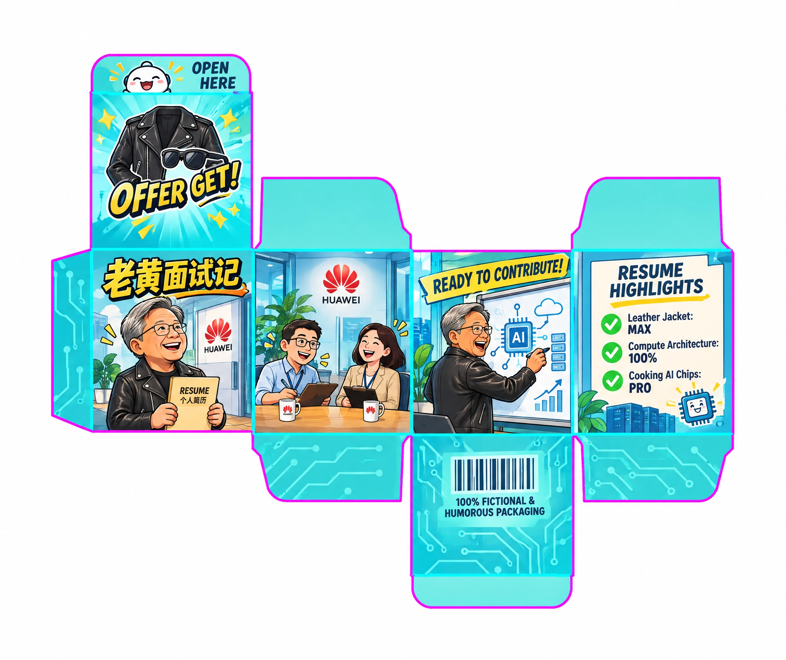
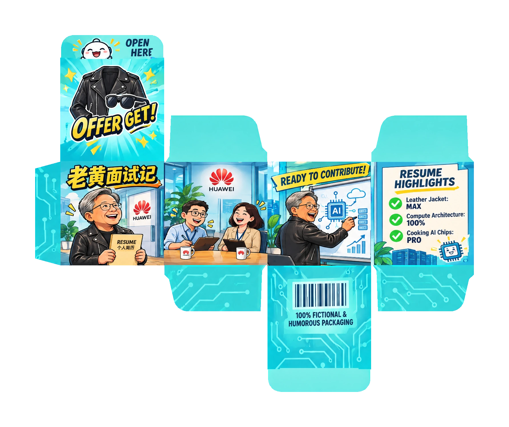
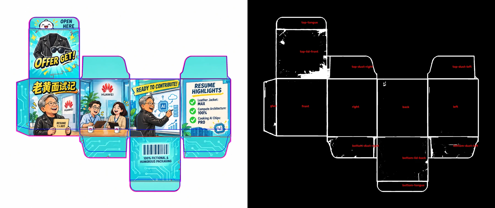

B01-R1 / 插盖盒 / 配准修复
五个面曾对不上，
现在 13 面均已配准。
原图没有重画，刀版没有改变。修复了辅助线识别和清理逻辑。
独立回放通过，边缘仍需复核；应用内完整流程与三维尚未复测。
两段时间分别测量，不包含 Agent 思考、生图、下载、应用或云端保存等待，不能相加当作完整任务完成时间。浏览器检查另列，不计入 84 项。
01 / 问题 → 原因 → 解决
问题：一张完整展开图装进插盖盒时，13 个面里有 5 个未通过检查，程序因此拒绝整版装配。
原因：画稿的青色背景和辅助折线颜色接近，旧算法把部分画稿当成了线条；生成图的折线又有约 80–95 像素偏移，需要放宽搜索范围，进一步扩大了误清理。于是出现“画面被清空”“多出假孔”和“轮廓边界不合格”。
怎么解决
- 先分清辅助线和画稿。优先提取高饱和度的辅助线核心，沿目标刀版附近寻找真实线条；保留旧识别方式作为后备。
- 清线只清线条附近。清理范围收窄到已检测线条及其抗锯齿边缘，避免把宽搜索带内的青色背景一并抹掉。
- 把逐面原因和复核提示带回界面。回执保留具体面片的失败原因；成功装配后也保留 needs_review 和边缘残差提示。面片身份、孔洞、网格翻转及越界检查继续执行。
没有把这 5 个面跳过，也没有关掉安全检查强行放图。目标刀版尺寸和结构保持不变。
证据怎样连起来：Langfuse 记录了失败调用和 5 个面名，但没有保存内部的逐面几何原因。读取原项目的同一张图片和母版，在本地重跑旧算法，复现了完全相同的 5 个失败面，才获得下面的具体原因。
02 / 到底是哪五个面出了什么问题
| 位置 | 旧算法检查结果 | 通俗解释 | 修复后 |
|---|---|---|---|
| 主体后面 back | Mapped boundary/source containment check failed before clipping | 识别出的面片轮廓无法通过边界包含检查；映射可能取到本面外的像素，因此被拒绝。 | 已配准并写入隔离副本 |
| 粘口 glue | No usable artwork pixels | 清线时把这块窄面的青色画稿一起当成辅助线，清理后没有可用画面像素。 | 已配准并写入隔离副本 |
| 上盖 top-lid-front | Hole count mismatch: target 0, detected 2 | 目标上盖没有孔，识别结果却多出两个孔；画面中的青色区域干扰了轮廓分割。 | 已配准并写入隔离副本 |
| 下插舌 bottom-tongue | No usable artwork pixels | 与粘口相同，较窄的青色画稿落入清线区域，清理后没有可用画面像素。 | 已配准并写入隔离副本 |
| 右下防尘翼 bottom-dust-right | Mapped boundary/source containment check failed before clipping | 识别出的不规则面片轮廓未通过边界包含检查，因此没有强行裁切后放入。 | 已配准并写入隔离副本 |
这里保留几何 face ID 便于定位。原回执中的 back 曾显示为“正面”；这个旧界面标签与几何命名不一致，不能据此判断贴图翻面。此次没有改名或交换面片。
粘口和下插舌不是原图没内容，而是处理时把内容误删了。边界检查报错也不是“放大一点就好”：程序必须确保取样仍来自对应的面。
03 / 原图与修复后的展开稿


沿用 11 月 13 日真实生成图片；蓝绿色画面和辅助折线非常接近。人物情节为虚构幽默创作。


本地算法实际输出，已去辅助线并映射回目标刀版；不是 AI 重新绘制的效果图，也不是三维截图。

技术诊断图：对照目标位置和旧算法检测结果，定位被误判的颜色区域。点击图片查看大图。
整体预览可见人物、文字、粘口和插舌内容。小边缘仍需检查：右侧面和左侧面的边界残差分别约 5.38、5.43 原图像素，高于 4 像素的提醒阈值。
04 / 修复后，独立验证到了哪一步
| 验证步骤 | 实际做了什么 | 结果 |
|---|---|---|
| 旧算法回放 | 用原图、原刀版重跑，记录每个面的错误。 | 8/13；22.400 秒；相同 5 面失败 |
| 修复后配准 | 优先识别线条核心，缩小清线范围；继续执行几何安全检查。 | 13/13；9.497 秒；needs_review |
| 隔离浏览器装配 | 运行实际光栅化、13 面切图、装配、版本记录代码；保存接口写入隔离副本。 | 0.457 秒；保存 1 次、版本 1 个；重新读取 13 面均有图 |
| 结构与原文件保护 | 对比刀版数据、结构层和原文件 SHA-256。 | 刀版与结构层未改；原项目图片、母版未改 |
| 相关自动检查 | Python 配准测试 32 项；前端装配测试 52 项。 | 84 项通过；不是全仓测试 |
| 应用内完整流程 / 三维 | 按本轮要求仅做独立验证，未操作主聊天窗口。 | 未运行；不能声称云端保存、回调或成品验收已通过 |
为什么还是 needs_review
13 面已全部映射，所有面网格翻转数为 0、越界取样像素为 0。但仍检测到额外区域，且左右侧面存在边缘残差。因此保留复核提示，没有把“能装入”写成“可以直接印刷”。
查看全部 13 个面的检查数据
| 面片 | 原状态 | 修复后 | 边界残差 p95（原图像素） | 网格翻转 / 越界取样 |
|---|---|---|---|---|
| 主体前面 · front | 通过 | 已映射 | 0.492 | 0 / 0 |
| 右侧面 · right | 通过 | 已映射 | 5.383 | 0 / 0 |
| 主体后面 · back | 失败 | 已映射 | 0.000 | 0 / 0 |
| 左侧面 · left | 通过 | 已映射 | 5.431 | 0 / 0 |
| 粘口 · glue | 失败 | 已映射 | 1.005 | 0 / 0 |
| 上盖 · top-lid-front | 失败 | 已映射 | 0.669 | 0 / 0 |
| 上插舌 · top-tongue | 通过 | 已映射 | 1.011 | 0 / 0 |
| 下盖 · bottom-lid-back | 通过 | 已映射 | 0.775 | 0 / 0 |
| 下插舌 · bottom-tongue | 失败 | 已映射 | 0.531 | 0 / 0 |
| 右上防尘翼 · top-dust-right | 通过 | 已映射 | 0.899 | 0 / 0 |
| 左上防尘翼 · top-dust-left | 通过 | 已映射 | 0.665 | 0 / 0 |
| 右下防尘翼 · bottom-dust-right | 失败 | 已映射 | 1.002 | 0 / 0 |
| 左下防尘翼 · bottom-dust-left | 通过 | 已映射 | 1.449 | 0 / 0 |
p95 是边界样本误差的第 95 百分位，不是最大误差，也不是印刷公差。
耗时改善与费用
本机同一图片的两次配准回放：22.400 秒 → 9.497 秒。旧版尝试 8 组识别配置，修复版 4 组后得到完整映射。只有一个案例，不能据此承诺其他盒型都能同幅提速。
复用原始测试图片，直接运行本地算法和隔离浏览器；本次没有新模型/生图 API 请求。本机计算成本未计价，不代表原始 B01 任务免费。
原 B01 曾经发生的生图调用和美元参考费用仍在 原始任务费用记录，不会因这次本地复测而归零。
05 / 原始日志、修改版本和可核查记录
原始 Langfuse Session ↗ · 原始制作 Trace ↗ · 本次脱敏回放数据 JSON
本次直接运行本地算法与隔离浏览器，没有新 Agent 会话，也没有新的 Langfuse 链路。以下链接对应原始失败，不冒充本次复测。
| 原调用 | 耗时 | 在做什么 / 失败位置 |
|---|---|---|
| tool_image_gen ↗ | 0.035 秒 | 调用了通用生图入口，被制品校验拒绝；原任务后来改用正确入口。 |
| canvas_product_add ↗ | 123.848 秒 | 等待装配回调超时；没有足够日志证明最底层原因。 |
| canvas_product_add ↗ | 122.391 秒 | 再次等待装配回调超时；本次独立回放没有复测云端等待链路。 |
| canvas_product_add ↗ | 21.411 秒 | 五个面未通过配准，整版未放入；本次修复针对这一条。 |
查看具体修改版本、数据指纹和提示
2026-11-14 本地工作区修复快照（文件 SHA-256）。这些业务代码来自含其他在做修改的本地工作区；文件指纹用于锁定回放版本，不宣称已部署到线上应用。
| 文件 | SHA-256 |
|---|---|
| useit-agent-pack-dieline/useit_dieline/spread/registration.py | ac028c25b7edba67be03ef2e2590a18b2d52702986893beb7d2bdca5bafdf35d |
| useit-agent-pack-dieline/useit_dieline/spread/fit.py | 07da09cd131bc5a8309f3fcbcd103acbcb5feb6ddac3b2438dec6eaa8d7a6862 |
| useit-agent-pack-dieline/useit_dieline/ops.py | 1958057345d639176b7fcdb674c1a0a5b6133f8c5f5bd82f4d64c3d1daf05bc2 |
| useit-studio-frontend/src/features/workspace/canvas/product-preview/addToProduct.ts | c24d98114e1283b9b85870bd0b51bc0bb3772ffff5d5ca08bef5222af443d1ba |
原图 SHA-256：80ad20cdd193861f67a8576cadac13b1470341a4dd0645b10b7732e2e8de03f6
原母版 SHA-256：c7ff394c241678f55d0654ee8c9ba7a97e847ab4947b27e682625ace1688e98e
几何指纹：cf374a8591413fa2dfc1f2956f6d16f5eeaa54aaa7a9e6076fa18e0fb99c4009
{
"warnings": [
"extra_regions",
"P02: residual boundary error exceeds 4 source pixels; inspect the fitted edge",
"P04: residual boundary error exceeds 4 source pixels; inspect the fitted edge"
],
"browser_observed_at": "2026-11-14T12:04:34.421Z"
}尚未解决或尚未证实的范围：原始两次回调超时的底层原因；应用内完整流程；三维预览和印刷验收。后续完整测试应单独记录，不能覆盖此次独立回放的证据边界。